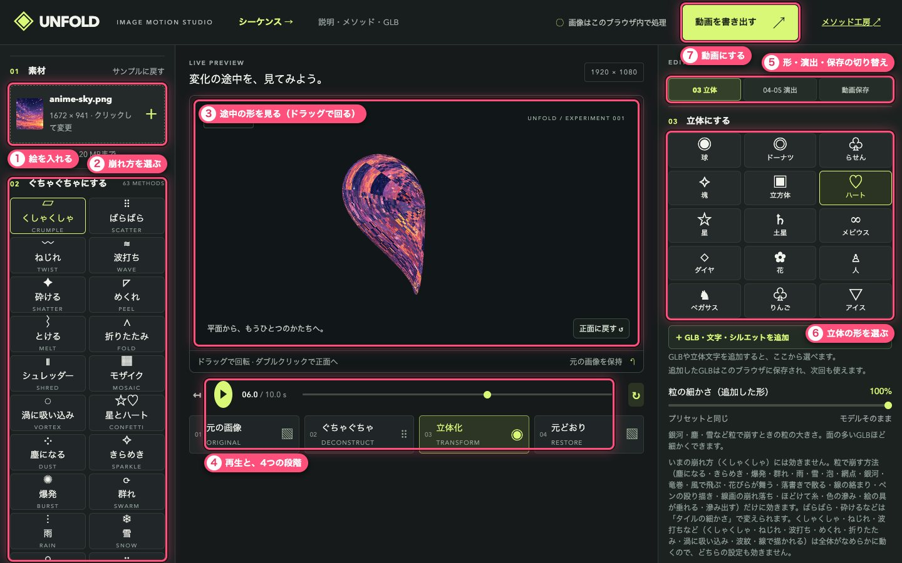
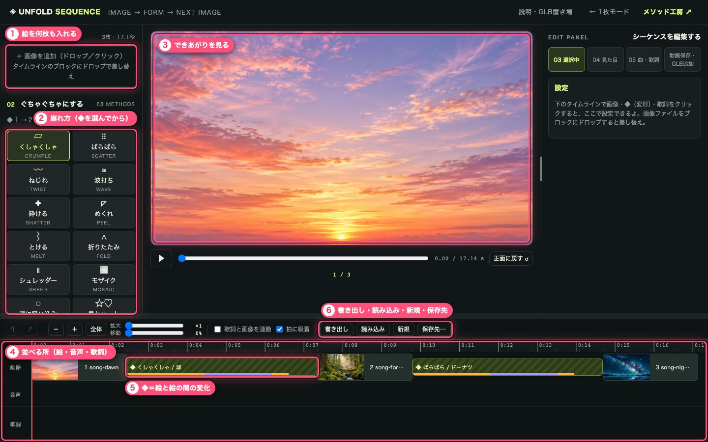
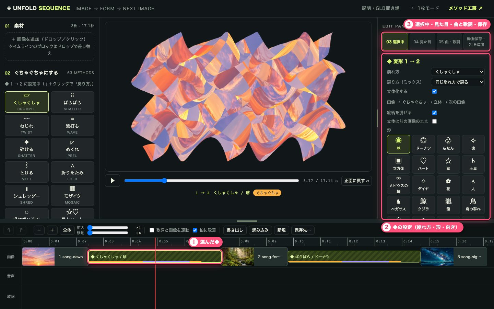

HOW TO USE
使い方 — 画面の見かた
UNFOLD には画面が2つあります。まず1枚の絵で試して、何枚もつないで曲に合わせ、作品（.unfold）に保存する、という順番です。写真のピンクの番号が、下の説明の番号です。
011枚モード
1枚の絵が「元の画像 → ぐちゃぐちゃ → 立体 → 元どおり」と変わる動画を作ります。開いたらすぐ見本が動いています。

- 絵を入れる「素材」の枠に絵をドロップするか、クリックして選びます（PNG・JPG・WebP、20MBまで）。「サンプルに戻す」で見本の絵に戻ります。出力の形（16:9・1:1・9:16）と形が違う絵は、入れるときに「全体を見せる」「画面いっぱいにする（見せたいところを選ぶ）」「自由に切り抜く」から選べます。あとから「切り抜き・収め方を調整…」でやり直せます。
- 崩れ方を選ぶくしゃくしゃ・ばらばら・砕ける・塵になる… から1つ。押すとすぐ動きが変わります。「02 ぐちゃぐちゃにする」のすぐ下の黄緑の「🎲 崩れ方と形をおまかせ」を押すと、崩れ方と立体の形を両方、今と違うものに選び直します。
- 途中の形を見るドラッグで立体を回せます。ダブルクリックか「正面に戻す」で正面に戻ります。
- 再生と、4つの段階再生ボタンと時間のバー。下の4つの札（元の画像・ぐちゃぐちゃ・立体化・元どおり）を押すと、その場面に飛びます。
- 形・演出・保存の切り替え「03 立体」で形、「04-05 演出」でブラー・シェイク・グリッチ・光のにじみなどの演出と仕上げ、「動画保存」で長さ・画面の比率・画質などを決めます。
- 立体の形を選ぶ球・ハート・土星・人… から選びます。その下の「＋ GLB・文字・シルエットを追加」で、3Dモデルや文字の形も足せます。GLBの色（テクスチャ）は「GLBの色」で写真と混ぜる割合を決めます。「立体の動き」では、立体になっている間の動き（ゆらゆら・うなずく・ドスン・いないいないばあ… 25種類）と大きさを選べます。🎲 は形に合う動きを選びます。
- 動画にする右上の「動画を書き出す」で、動画ファイルにして保存します。
02シーケンス
絵を何枚も並べて、絵と絵の間の変化（◆）を決めます。曲を入れると拍に合わせて切り替わり、歌詞も入れられます（下の「曲と歌詞」）。

- 絵を何枚も入れる入れた順にタイムラインに並びます。タイムラインのブロックに絵をドロップすると、その絵を差し替えます。画面（16:9）と形が違う絵は、1枚ごとに「全体を見せる」か「切り抜く」かを選べます（複数枚は「残りも同じ設定で」でまとめて）。入れたあとも、絵を選んで「切り抜き・収め方を調整…」で変えられます。
- 崩れ方タイムラインの◆を選んでから押すと、その◆の崩れ方が変わります。すぐ上の「🎲 崩れ方と形をおまかせ」は、すべての◆の崩れ方と形を選び直します（元に戻すで戻せます）。
- できあがりを見る再生すると、つないだ動画をここで確かめられます。
- 並べる所上から「画像」「音声」「歌詞」。ドラッグで並べ替え、端をつまんで長さを変えます。
- ◆ ＝ 絵と絵の間の変化押すと、右にその◆の設定が出ます（下の写真）。
- 書き出し・読み込み・新規・保存先「書き出し」は作品を1つのファイル（.unfold）に保存、「読み込み」はそのファイルを開きます。「新規」は確かめてから空にします（書き出していない変更は消えます）。「保存先…」を決めると、パソコンのファイルにも自動で保存します。

- 選んだ◆枠が光っているのが、いま選んでいる◆です。
- ◆の設定崩れ方・戻り方・立体にするか・絵柄を混ぜるか・形・変形の長さ・立体の動き・回転とカメラの移動。ここで変えたことは、その◆だけに効きます。
- タブ「03 選択中」は選んだものの設定、「04 見た目」は再生位置の見た目、「05 曲・歌詞」は曲と歌詞、「動画保存・GLB追加」は動画にする所です。
◆の動きが速い・元に戻したい時
- 変形の長さ：「変形の長さ（拍）」の下に、今の長さが秒で出ます。短い◆ほど速く崩れて立体になります。ほかの◆より短い時はオレンジで出るので、「↺ 変形の長さを○拍に戻す」で、ほかの◆でいちばん多い長さに戻せます。
- 立体の動き・回転・カメラの移動：何か変えていると、「立体の動き」の箱に「元の動きから変えているもの」がオレンジで出ます（例：カメラの移動 0.18〜1.47秒、ズーム 1.5→2倍）。「↺ 動きを全部元に戻す」で、全部いつもの動きに戻ります。
- どれも ⌘/Ctrl＋Z（元に戻す）で、前の設定に戻せます。
曲と歌詞（「05 曲・歌詞」タブ）
- 曲を入れる「1 曲を入れる」に音楽ファイル（MP3 など）を選ぶか、ドロップします。拍を見つけて、絵の切り替えを拍に合わせます。入れた曲は「曲を外す」で外せます（歌詞と時刻は残ります。元に戻すで曲も戻ります）。
- 歌詞を入れるSuno などで作った曲のファイルに歌詞が入っていれば、曲を入れた時に自動で読み取ります。入っていなければ「2 歌詞を入れる」に1行ずつ書くか、歌詞ファイル（LRC / SRT / JSON / TXT）を読み込みます。[Chorus] のような見出しは区切りの目印です。
- 時刻を合わせる「3 曲に合わせる」の紫の「歌詞を曲に合わせる（自動）」を押すと、曲の歌をブラウザの中で聞き取って、行ごとの始まりと終わりを付けます。曲はどこにも送りません。初めての時だけ、聞き取りの仕組み（約250MB）を読み込みます。曲の長さと同じくらいの時間がかかり、もう一度押すと止められます。
- 直す合わない行は、タイムラインの歌詞の箱をずらしたり、端を引っぱったりして直します。行ごとに「開始・終了（曲の秒）」を数字で入れることもできます。
- 字幕ファイルにする「SRTで保存（字幕ファイル）」で、歌詞の行と時刻を
.srtにして保存します（時刻は曲の秒）。動画編集アプリの字幕などに使えます。
03STUDIO（前に作った作品のために）
曲・歌詞・絵・動画を同じ曲の時間に重ねて、MVに仕上げる画面でした。シーケンスからの入口は閉じていて、前に STUDIO で作った作品を開いて書き出すためだけに、画面を残しています（studio.html）。新しい作品は、1枚モードとシーケンスで作ってください。